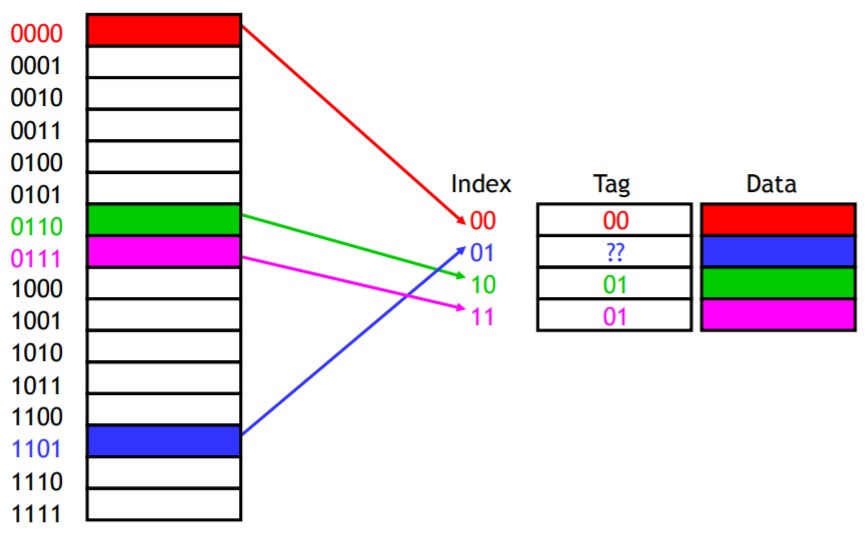

Cache
Cache
Cache Basics
- Caches are divided into cache blocks (also called cache lines), which may be of various sizes.
- The number of blocks in a cache is usually a power of 2
- Each block in the cache has a block index
Direct-mapped cache
- A direct-mapped cache is the simplest approach
- Each main memory address maps to exactly one cache block.
How can we compute the mapping?
The mod (remainder) operator
If the cache contains $2^k$ blocks,
then the data at memory address $i$ would go to cache block index $ i\ mod\ 2^k $.The least-significant bits (equivalent as computing the mod)
Take the least significant $k$ bits of the memory address $i$ as the cache block index.
How to distinguish between different memory addresses that map to the same cache block?
Adding tags to the cache, which supply the rest of the address bits.

Now we can tell exactly which addresses of main memory are stored in the cache, by concatenating the cache block tags with the block indices.
The Valid Bit
Add a valid bit for each cache block to indicate whether a cache block contains valid data.
- When the system is initialized, all the valid bits are set to 0.
- When data is loaded into a particular cache block, the correspondng valid bit is set to 1.
The cache contains not only the copies of the data in memory.
It also has bits to help us find the data within the cache and verify its validity.
Cache Hit/Miss
Cache controller
Cache Performance
AMAT
Fully Associative Cache
A fully associative cache permits data to be stored in any cache block, instead of forcing each memory address into one particular block.
Price of full associativity
Expensive to implement.
No index field, the entire address must be used as the tag, increasing the total cache size.
Data could be anywhere in the cache, so we must check the tag of every cache block. That's a lot of comparators!
Set Associativity
A set-associative cache is an intermediate possibility between the direct-mapped cache and the fully associative cache.
- The cache is divided into groups of blocks, called sets.
- Each memory address maps to exactly one set in the cache, but data may be placed in any block within that set.
If each set has $2^x$ blocks, the cache is an $2^x$-way associative cache.
way associativity = number of blocks in the set.
Locating a set associative block
We can determine where a memory address belongs in an associative cache in a similar way as before.
If a cache has $2^s$ sets and each block has $2^n$ bytes, the memory address $i$ can be partitioned as follows.

Block Offset = $i\ mod\ 2^n$
Block Address = $i\ / 2^n$
Set Index = $i\ mod\ 2^s$